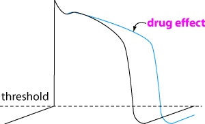

Class 3 antiarrhythmics - Potassium channel blockers

Rarely used in either man or animals, but most new experimental drugs fall into
this class so that situation may change. Amiodarone (a thyroxin
analogue) is the main drug of this class used in people but has a very long
half life and lots of side effects; bretylium is sometimes
used in dogs with refractory ventricular arrhythmias.
Sotalol is a ß blocker which also acts as a class 3 drug
and has been used in dogs.
Side effects can include tachyarrhythmias.
| 6 Cardiovascular index |
| |
copyright
Massey University
|